Drawing material: Plain Carbon Steel. Finish: black oxide.
Speeds and feeds are starting points, not limits.
† example fixture dimensions (plausible, not measured): confirm before making.
DRO: Electronica EL400 Operation Manual, ABS mode; zero with Axis Set, never Preset.
DRO resolution: PM-30MV 0.005 mm. DRO targets print on this grid.
Stock: flat bar 19.050 × 31.750 × 38.000 long.
| setup | starts from | machine | holding |
|---|---|---|---|
| P1 | the stock blank | PM-30MV | vise |
| P2 | part as it arrives from Setup P1 | PM-30MV | vise |
| P3 | part as it arrives from Setup P2 | PM-30MV | vise |
| P4 | part as it arrives from Setup P3 | PM-30MV | vise |
| P5 | part as it arrives from Setup P4 | PM-30MV | vise |
| P6 | part as it arrives from Setup P5 | PM-30MV | vise |
| S1 | part as it arrives from Setup P6 | PM-30MV | vise |
| S2 | part as it arrives from Setup S1 | PM-30MV | vise |
| S3 | part as it arrives from Setup S2 | PM-30MV | vise |
| S4 | part as it arrives from Setup S3 | PM-30MV | angle plate |
| S4F | part as it arrives from Setup S4 | bench | 4 in bench vise |
| S5 | part as it arrives from Setup S4F | bench | finishing rest plate |
| feature | limits |
|---|---|
| seat face | no toleranced requirement |
| foot profile | length 24.10–24.30; width 15.90–16.10 |
| outer face | no toleranced requirement |
| foot top | height 5.90–6.10 |
| ear relief | thickness 5.90–6.10 |
| ear sides | width 13.90–14.10 |
| hold down a | Ø 4.572–4.672; station 8.10–8.30 |
| hold down b | Ø 4.572–4.672; station 15.90–16.10 |
| ear arch | R 6.90–7.10 |
| cross bore | Ø 6.50–6.53; height 25.10–25.30 |
| all edges | Remove burrs; break sharp edges R0.25 max or chamfer 0.25 max. |
T# = tool number in that setup's TOOLS table. EM = endmill. DTI = test indicator. mic = micrometer.
Sign off: __________ First article / measured results: ____________________
Starts from: the stock blank — top at Z 0.525, bottom at Z -18.525.
| grip length mm | jaw top above parallels mm | work top above jaw tops mm | jaw centre at X | parallels at (X, Y) |
|---|---|---|---|---|
| 13.195 | 13.195 | 5.855 | 17.100 | (17.100, 0.500); (17.100, 25.700) |
Coolant: cutting-oil.
| T | tool | insert / size / material | holder / station | ops |
|---|---|---|---|---|
| T1 | 3/4 in 4fl EM | Ø19.050, flute 33.300, HSS, TiN, projection 57.000 from holder face | R8 3/4 in collet | 10 |
Positive directions: X+ tool moves right relative to the work (table moves left); Y+ tool moves away from you relative to the work (table moves toward you); Z+ tool moves up. Axis Set each axis (never Preset), then make the check jog: the display must show 'must read'; 'if reversed' means STOP, fix the axis direction and redo the zero.
| axis | touch / pick up | Axis Set | check jog | must read | if reversed |
|---|---|---|---|---|---|
| X | sawn crown end; 0.2 in edge finder; from -X side; surface at -1.900; edge-finder radius 2.540; speed, kick-out and offset: EDGE FINDER box | -4.440 | +X 10.000 | 5.560 | -14.440 |
| Y | front edge; 0.2 in edge finder; from -Y side; surface at -2.775; edge-finder radius 2.540; speed, kick-out and offset: EDGE FINDER box | -5.315 | +Y 10.000 | 4.685 | -15.315 |
| Z | top; T1 3/4 in 4fl EM; surface at 0.525; paper 0.050 | 0.575 | +Z 10.000 | 10.575 | -9.425 |
X and Y check jog, after each Axis Set:
Speed: 750–1500 rpm, in the spindle range that covers it (finder 750–1500 rpm; mill 50–3000 rpm).
Kick-out: spindle stopped, push the tip a little off centre by hand. Run the spindle: the tip wobbles. Feed toward the edge by handwheel, in the smallest steps once close: the tip touches and runs true with the body, and at the next small step it kicks sharply sideways. Stop at the kick. Back off, re-approach in the smallest steps and stop at the first kick again: that position is the pick-up.
Offset: at the pick-up the spindle axis is half the tip Ø (5.080) off the edge, r = 2.540. Coming from the − side (moving + onto the edge): Axis Set edge − 2.540. Coming from the + side: Axis Set edge + 2.540. Each DRO ZERO row prints its signed Axis Set.
Finder data: Starrett 827A: mechanical edge finder, .200 in contact Ø, .375 in body, single end (starrett.com Edge & Center Finders listing); 750-1500 rpm for a .200 in mechanical edge finder; tip centres then breaks away at the edge (Travers Tool Co., How to Use a .200 in Edge Finder, solutions.travers.com, 2025).
| SETUP P1 — sheet 1 (continued): operations | ||||||||
|---|---|---|---|---|---|---|---|---|
| op | do | feature | tool | rpm | feed | Z tip | direction | inspection: limit, gauge |
| 10 | face, 0.525 mm axial per pass | blank left | T1 | 450 | 90 mm/min | Z 0.525 → 0.000 in 1 level of 0.525 max | conventional | — |
Face the whole left side flat, X -1.9..36.1 and Y -2.775..28.975, from Z +0.525 to Z0. Mark it as the reference face. See contour table on P1 sheet 3 | ||||||||
Sign off: __________ First article / measured results: ____________________
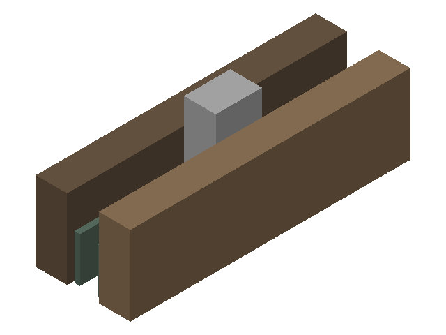
Spindle-to-table, tallest stack (op 10) with tool-change room: needs 212.104 of 431.800: fits.
X travel: needs 419.100 of 584.200: fits.
Y travel: needs 177.800 of 222.250: fits.
| op | tool | closest obstacle | clearance mm | action |
|---|---|---|---|---|
| 10 | T1 | fixed jaw beside the cut | 5.330 |
Rasters: feed each pass from → to, lift to the op's lift Z, rapid back to the next pass's start.
At each pass start, clear of the stock: lower to Z 0.000.
Lift to Z 5.525 after each pass; pass ends both in air, a cutter radius past the stock — every pass runs in and out clear.
| P1 op 10 — blank left · T1 3/4 in 4fl EM · Z 0.000 · conventional | ||||
|---|---|---|---|---|
| pass | X from | Y from | X to | Y to |
| 1 | -13.425 | -2.775 | 47.625 | -2.775 |
| 2 | -13.425 | 7.810 | 47.625 | 7.810 |
| 3 | -13.425 | 18.395 | 47.625 | 18.395 |
| 4 | -13.425 | 28.975 | 47.625 | 28.975 |
Starts from: part as it arrives from Setup P1 — top at Z 2.775, bottom at Z -28.975.
| grip length mm | jaw top above parallels mm | work top above jaw tops mm | jaw centre at X | parallels at (X, Y) |
|---|---|---|---|---|
| 19.545 | 19.545 | 12.205 | 17.100 | (17.100, -2.000); (17.100, -16.500) |
Coolant: cutting-oil.
| T | tool | insert / size / material | holder / station | ops |
|---|---|---|---|---|
| T1 | 3/4 in 4fl EM | Ø19.050, flute 33.300, HSS, TiN, projection 57.000 from holder face | R8 3/4 in collet | 10 |
Positive directions: X+ tool moves right relative to the work (table moves left); Y+ tool moves away from you relative to the work (table moves toward you); Z+ tool moves up. Axis Set each axis (never Preset), then make the check jog: the display must show 'must read'; 'if reversed' means STOP, fix the axis direction and redo the zero.
| axis | touch / pick up | Axis Set | check jog | must read | if reversed |
|---|---|---|---|---|---|
| X | sawn crown end; 0.2 in edge finder; from -X side; surface at -1.900; edge-finder radius 2.540; speed, kick-out and offset: EDGE FINDER box, Setup P1 sheet 1 | -4.440 | +X 10.000 | 5.560 | -14.440 |
| Y | blank left; 0.2 in edge finder; from +Y side; surface at 0.000; edge-finder radius 2.540; speed, kick-out and offset: EDGE FINDER box, Setup P1 sheet 1 | 2.540 | +Y 10.000 | 12.540 | -7.460 |
| Z | top; T1 3/4 in 4fl EM; surface at 2.775; paper 0.050 | 2.825 | +Z 10.000 | 12.825 | -7.175 |
X and Y check jog, after each Axis Set:
| SETUP P2 — sheet 1 (continued): operations | ||||||||
|---|---|---|---|---|---|---|---|---|
| op | do | feature | tool | rpm | feed | Z tip | direction | inspection: limit, gauge |
| 10 | face, 1.400 mm axial per pass | blank outer end | T1 | 450 | 90 mm/min | Z 2.775 → 0.000 in 2 levels of 1.400 max | conventional | — |
Face the outer end from Z +2.775 to Z0 in two passes. See contour table on P2 sheet 3 | ||||||||
Sign off: __________ First article / measured results: ____________________
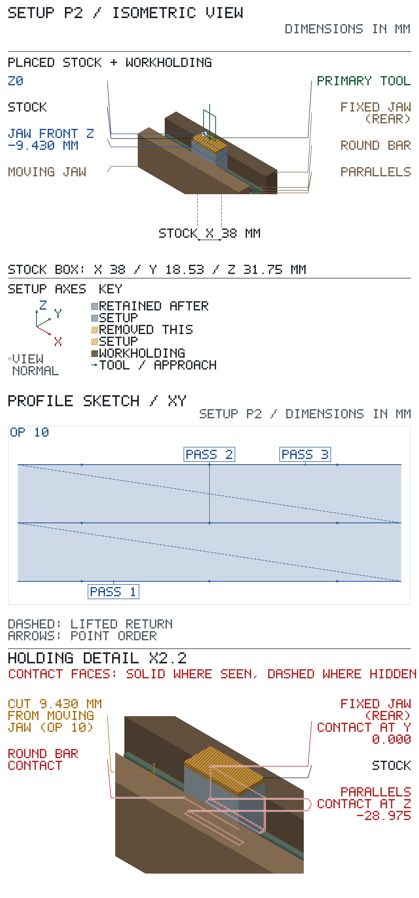
Spindle-to-table, tallest stack (op 10) with tool-change room: needs 218.454 of 431.800: fits.
X travel: needs 419.100 of 584.200: fits.
Y travel: needs 177.800 of 222.250: fits.
| op | tool | closest obstacle | clearance mm | action |
|---|---|---|---|---|
| 10 | T1 | moving jaw beside the cut | 9.430 |
Rasters: feed each pass from → to, lift to the op's lift Z, rapid back to the next pass's start.
2 depth levels, top first, at the Zs in the heading: run the whole path below at each. Get down at each pass start, clear of the stock: lower to the level's Z. Between levels, lift to Z 7.775 (above the stock), rapid back to pass 1.
Done: level 1 of 2 level 2 of 2
Lift to Z 7.775 after each pass; pass ends both in air, a cutter radius past the stock — every pass runs in and out clear.
| P2 op 10 — blank outer end · T1 3/4 in 4fl EM · Z 1.375, 0.000 · conventional | ||||
|---|---|---|---|---|
| pass | X from | Y from | X to | Y to |
| 1 | -13.425 | -18.525 | 47.625 | -18.525 |
| 2 | -13.425 | -9.260 | 47.625 | -9.260 |
| 3 | -13.425 | 0.000 | 47.625 | 0.000 |
Turn the part over: the other face up, the +X end moves to −X. Starts from: part as it arrives from Setup P2 — top at Z 2.775, bottom at Z -26.200.
| grip length mm | jaw top above parallels mm | work top above jaw tops mm | jaw centre at X | parallels at (X, Y) |
|---|---|---|---|---|
| 19.545 | 19.545 | 9.430 | 17.100 | (17.100, -2.000); (17.100, -16.500) |
Coolant: cutting-oil.
| T | tool | insert / size / material | holder / station | ops |
|---|---|---|---|---|
| T1 | 3/4 in 4fl EM | Ø19.050, flute 33.300, HSS, TiN, projection 57.000 from holder face | R8 3/4 in collet | 10 |
Positive directions: X+ tool moves right relative to the work (table moves left); Y+ tool moves away from you relative to the work (table moves toward you); Z+ tool moves up. Axis Set each axis (never Preset), then make the check jog: the display must show 'must read'; 'if reversed' means STOP, fix the axis direction and redo the zero.
| axis | touch / pick up | Axis Set | check jog | must read | if reversed |
|---|---|---|---|---|---|
| X | sawn seat end; 0.2 in edge finder; from -X side; surface at -1.900; edge-finder radius 2.540; speed, kick-out and offset: EDGE FINDER box, Setup P1 sheet 1 | -4.440 | +X 10.000 | 5.560 | -14.440 |
| Y | blank left; 0.2 in edge finder; from +Y side; surface at 0.000; edge-finder radius 2.540; speed, kick-out and offset: EDGE FINDER box, Setup P1 sheet 1 | 2.540 | +Y 10.000 | 12.540 | -7.460 |
| Z | top; touch it, then set from the measured M; T1 3/4 in 4fl EM; paper 0.050; measure with 1-2 in mic; M = before clamping: mike the bar from the faced outer end to the raw free end | M − 26.150 | +Z 10.000 | M − 16.150 | M − 36.150 |
X and Y check jog, after each Axis Set:
M puts the raw top at Z = M − 26.2; the ops' levels start from Z 2.775. If M − 26.2 is above Z 2.775, first face the top down to Z 2.775, no more than 1.400 per pass.
| SETUP P3 — sheet 1 (continued): operations | ||||||||
|---|---|---|---|---|---|---|---|---|
| op | do | feature | tool | rpm | feed | Z tip | direction | inspection: limit, gauge |
| 10 | face, 1.400 mm axial per pass | blank free end | T1 | 450 | 90 mm/min | Z 2.775 → 0.000 in 2 levels of 1.400 max | conventional | — |
Face the free end to Z0, 26.2 over the outer end, in two passes. See contour table on P3 sheet 3 | ||||||||
Sign off: __________ First article / measured results: ____________________
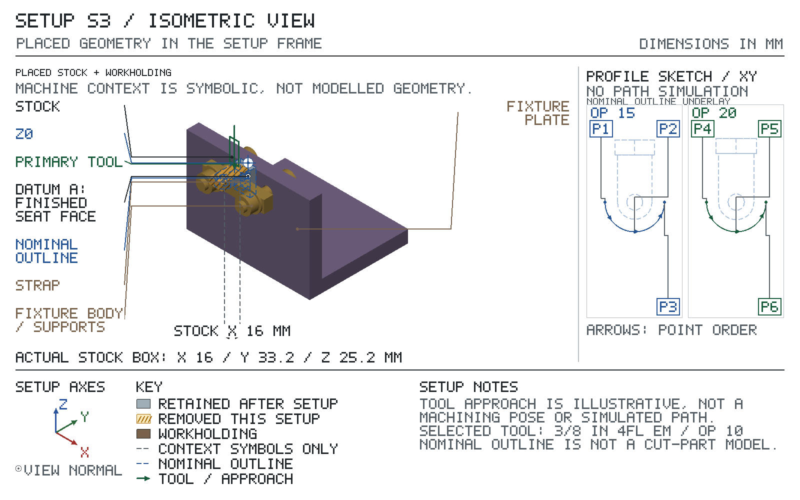
Spindle-to-table, tallest stack (op 10) with tool-change room: needs 215.679 of 431.800: fits.
X travel: needs 419.100 of 584.200: fits.
Y travel: needs 177.800 of 222.250: fits.
| op | tool | closest obstacle | clearance mm | action |
|---|---|---|---|---|
| 10 | T1 | fixed jaw beside the cut | 6.655 |
Rasters: feed each pass from → to, lift to the op's lift Z, rapid back to the next pass's start.
2 depth levels, top first, at the Zs in the heading: run the whole path below at each. Get down at each pass start, clear of the stock: lower to the level's Z. Between levels, lift to Z 7.775 (above the stock), rapid back to pass 1.
Done: level 1 of 2 level 2 of 2
Lift to Z 7.775 after each pass; pass ends both in air, a cutter radius past the stock — every pass runs in and out clear.
| P3 op 10 — blank free end · T1 3/4 in 4fl EM · Z 1.375, 0.000 · conventional | ||||
|---|---|---|---|---|
| pass | X from | Y from | X to | Y to |
| 1 | -13.425 | -18.525 | 47.625 | -18.525 |
| 2 | -13.425 | -9.260 | 47.625 | -9.260 |
| 3 | -13.425 | 0.000 | 47.625 | 0.000 |
Starts from: part as it arrives from Setup P3 — top at Z 0.525, bottom at Z -18.000.
| grip length mm | jaw top above parallels mm | work top above jaw tops mm | jaw centre at X | parallels at (X, Y) |
|---|---|---|---|---|
| 13.195 | 13.195 | 5.330 | 17.100 | (17.100, 2.000); (17.100, 24.200) |
Coolant: cutting-oil.
| T | tool | insert / size / material | holder / station | ops |
|---|---|---|---|---|
| T1 | 3/4 in 4fl EM | Ø19.050, flute 33.300, HSS, TiN, projection 57.000 from holder face | R8 3/4 in collet | 10 |
Positive directions: X+ tool moves right relative to the work (table moves left); Y+ tool moves away from you relative to the work (table moves toward you); Z+ tool moves up. Axis Set each axis (never Preset), then make the check jog: the display must show 'must read'; 'if reversed' means STOP, fix the axis direction and redo the zero.
| axis | touch / pick up | Axis Set | check jog | must read | if reversed |
|---|---|---|---|---|---|
| X | sawn crown end; 0.2 in edge finder; from -X side; surface at -1.900; edge-finder radius 2.540; speed, kick-out and offset: EDGE FINDER box, Setup P1 sheet 1 | -4.440 | +X 10.000 | 5.560 | -14.440 |
| Y | blank free end; 0.2 in edge finder; from -Y side; surface at 0.000; edge-finder radius 2.540; speed, kick-out and offset: EDGE FINDER box, Setup P1 sheet 1 | -2.540 | +Y 10.000 | 7.460 | -12.540 |
| Z | top; touch it, then set from the measured M; T1 3/4 in 4fl EM; paper 0.050; measure with 0-1 in mic; M = before clamping: mike the bar from the faced left side to the raw right side | M − 17.950 | +Z 10.000 | M − 7.950 | M − 27.950 |
X and Y check jog, after each Axis Set:
M puts the raw top at Z = M − 18; the ops' levels start from Z 0.525. If M − 18 is above Z 0.525, first face the top down to Z 0.525, no more than 0.525 per pass.
| SETUP P4 — sheet 1 (continued): operations | ||||||||
|---|---|---|---|---|---|---|---|---|
| op | do | feature | tool | rpm | feed | Z tip | direction | inspection: limit, gauge |
| 10 | face, 0.525 mm axial per pass | blank right | T1 | 450 | 90 mm/min | Z 0.525 → 0.000 in 1 level of 0.525 max | conventional | — |
Face the right side to Z0, 18.0 over the left side. See contour table on P4 sheet 3 | ||||||||
Sign off: __________ First article / measured results: ____________________
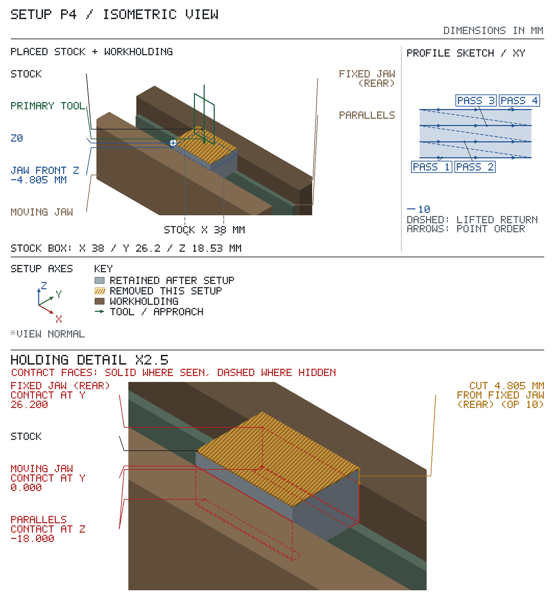
Spindle-to-table, tallest stack (op 10) with tool-change room: needs 211.579 of 431.800: fits.
X travel: needs 419.100 of 584.200: fits.
Y travel: needs 177.800 of 222.250: fits.
| op | tool | closest obstacle | clearance mm | action |
|---|---|---|---|---|
| 10 | T1 | fixed jaw beside the cut | 4.805 |
Rasters: feed each pass from → to, lift to the op's lift Z, rapid back to the next pass's start.
At each pass start, clear of the stock: lower to Z 0.000.
Lift to Z 5.525 after each pass; pass ends both in air, a cutter radius past the stock — every pass runs in and out clear.
| P4 op 10 — blank right · T1 3/4 in 4fl EM · Z 0.000 · conventional | ||||
|---|---|---|---|---|
| pass | X from | Y from | X to | Y to |
| 1 | -13.425 | 0.000 | 47.625 | 0.000 |
| 2 | -13.425 | 8.735 | 47.625 | 8.735 |
| 3 | -13.425 | 17.470 | 47.625 | 17.470 |
| 4 | -13.425 | 26.200 | 47.625 | 26.200 |
Starts from: part as it arrives from Setup P4 — top at Z 1.900, bottom at Z -36.100.
| grip length mm | jaw top above parallels mm | work top above jaw tops mm | jaw centre at X | parallels at (X, Y) |
|---|---|---|---|---|
| 29.070 | 29.070 | 8.930 | 13.100 | (13.100, -2.000); (13.100, -16.000) |
Coolant: cutting-oil.
| T | tool | insert / size / material | holder / station | ops |
|---|---|---|---|---|
| T1 | 3/4 in 4fl EM | Ø19.050, flute 33.300, HSS, TiN, projection 57.000 from holder face | R8 3/4 in collet | 10 |
Positive directions: X+ tool moves right relative to the work (table moves left); Y+ tool moves away from you relative to the work (table moves toward you); Z+ tool moves up. Axis Set each axis (never Preset), then make the check jog: the display must show 'must read'; 'if reversed' means STOP, fix the axis direction and redo the zero.
| axis | touch / pick up | Axis Set | check jog | must read | if reversed |
|---|---|---|---|---|---|
| X | blank free end; 0.2 in edge finder; from -X side; surface at 0.000; edge-finder radius 2.540; speed, kick-out and offset: EDGE FINDER box, Setup P1 sheet 1 | -2.540 | +X 10.000 | 7.460 | -12.540 |
| Y | blank left; 0.2 in edge finder; from +Y side; surface at 0.000; edge-finder radius 2.540; speed, kick-out and offset: EDGE FINDER box, Setup P1 sheet 1 | 2.540 | +Y 10.000 | 12.540 | -7.460 |
| Z | top; T1 3/4 in 4fl EM; surface at 1.900; paper 0.050 | 1.950 | +Z 10.000 | 11.950 | -8.050 |
X and Y check jog, after each Axis Set:
| SETUP P5 — sheet 1 (continued): operations | ||||||||
|---|---|---|---|---|---|---|---|---|
| op | do | feature | tool | rpm | feed | Z tip | direction | inspection: limit, gauge |
| 10 | face, 1.900 mm axial per pass | blank crown end | T1 | 450 | 90 mm/min | Z 1.900 → 0.000 in 1 level of 1.900 max | conventional | — |
Face the sawn crown end from Z +1.9 to Z0. See contour table on P5 sheet 3 | ||||||||
Sign off: __________ First article / measured results: ____________________
Spindle-to-table, tallest stack (op 10) with tool-change room: needs 215.179 of 431.800: fits.
X travel: needs 419.100 of 584.200: fits.
Y travel: needs 177.800 of 222.250: fits.
| op | tool | closest obstacle | clearance mm | action |
|---|---|---|---|---|
| 10 | T1 | moving jaw beside the cut | 7.030 |
Rasters: feed each pass from → to, lift to the op's lift Z, rapid back to the next pass's start.
At each pass start, clear of the stock: lower to Z 0.000.
Lift to Z 6.900 after each pass; pass ends both in air, a cutter radius past the stock — every pass runs in and out clear.
| P5 op 10 — blank crown end · T1 3/4 in 4fl EM · Z 0.000 · conventional | ||||
|---|---|---|---|---|
| pass | X from | Y from | X to | Y to |
| 1 | -11.525 | -18.000 | 37.725 | -18.000 |
| 2 | -11.525 | -9.000 | 37.725 | -9.000 |
| 3 | -11.525 | 0.000 | 37.725 | 0.000 |
Turn the part over: the other face up, the +X end moves to −X. Starts from: part as it arrives from Setup P5 — top at Z 1.900, bottom at Z -34.200.
| grip length mm | jaw top above parallels mm | work top above jaw tops mm | jaw centre at X | parallels at (X, Y) |
|---|---|---|---|---|
| 29.070 | 29.070 | 7.030 | 13.100 | (13.100, -2.000); (13.100, -16.000) |
Coolant: cutting-oil.
| T | tool | insert / size / material | holder / station | ops |
|---|---|---|---|---|
| T1 | 3/4 in 4fl EM | Ø19.050, flute 33.300, HSS, TiN, projection 57.000 from holder face | R8 3/4 in collet | 10 |
Positive directions: X+ tool moves right relative to the work (table moves left); Y+ tool moves away from you relative to the work (table moves toward you); Z+ tool moves up. Axis Set each axis (never Preset), then make the check jog: the display must show 'must read'; 'if reversed' means STOP, fix the axis direction and redo the zero.
| axis | touch / pick up | Axis Set | check jog | must read | if reversed |
|---|---|---|---|---|---|
| X | blank outer end; 0.2 in edge finder; from -X side; surface at 0.000; edge-finder radius 2.540; speed, kick-out and offset: EDGE FINDER box, Setup P1 sheet 1 | -2.540 | +X 10.000 | 7.460 | -12.540 |
| Y | blank left; 0.2 in edge finder; from +Y side; surface at 0.000; edge-finder radius 2.540; speed, kick-out and offset: EDGE FINDER box, Setup P1 sheet 1 | 2.540 | +Y 10.000 | 12.540 | -7.460 |
| Z | top; touch it, then set from the measured M; T1 3/4 in 4fl EM; paper 0.050; measure with 1-2 in mic; M = before clamping: mike the bar from the faced crown end to the sawn seat end | M − 34.150 | +Z 10.000 | M − 24.150 | M − 44.150 |
X and Y check jog, after each Axis Set:
M puts the raw top at Z = M − 34.2; the ops' levels start from Z 1.900. If M − 34.2 is above Z 1.900, first face the top down to Z 1.900, no more than 1.900 per pass.
| SETUP P6 — sheet 1 (continued): operations | ||||||||
|---|---|---|---|---|---|---|---|---|
| op | do | feature | tool | rpm | feed | Z tip | direction | inspection: limit, gauge |
| 10 | face, 1.900 mm axial per pass | blank seat end | T1 | 450 | 90 mm/min | Z 1.900 → 0.000 in 1 level of 1.900 max | conventional | — |
Face the sawn seat end to Z0, 34.2 over the crown end. See contour table on P6 sheet 3 | ||||||||
Sign off: __________ First article / measured results: ____________________
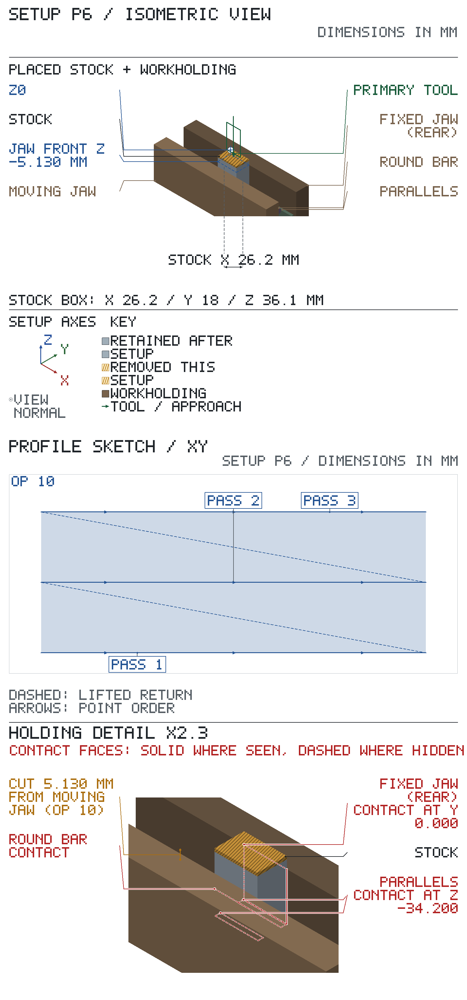
Spindle-to-table, tallest stack (op 10) with tool-change room: needs 213.279 of 431.800: fits.
X travel: needs 419.100 of 584.200: fits.
Y travel: needs 177.800 of 222.250: fits.
| op | tool | closest obstacle | clearance mm | action |
|---|---|---|---|---|
| 10 | T1 | moving jaw beside the cut | 5.130 |
Process limits for the squared blank, not drawing limits: SETUP S1 locates on these faces. File the edge burrs off and wipe the blank first.
| check | limit and method | gauge |
|---|---|---|
| size | 34.2 ±0.02 mm | 1-2 in micrometer |
| size | 18 ±0.1 mm | 0-1 in micrometer |
| size | 26.2 ±0.02 mm | 1-2 in micrometer |
| flat | within 0.02 mm: Lay each faced side on the granite plate; it must not rock. Sweep the DTI on the height gauge across the face above and read the needle's total movement. | dial test indicator |
| square | within 0.02 mm: Stand the blank on the granite against a 1-2-3 block's ground side; sweep the DTI up each faced edge and end and read the needle's total movement over the face. | dial test indicator |
| parallel | within 0.02 mm: Lay the left side on the granite and sweep the DTI over the right side; then the outer end down and sweep the free end; then the crown end down and sweep the seat end. Read the needle's total movement on each sweep. | dial test indicator |
Rasters: feed each pass from → to, lift to the op's lift Z, rapid back to the next pass's start.
At each pass start, clear of the stock: lower to Z 0.000.
Lift to Z 6.900 after each pass; pass ends both in air, a cutter radius past the stock — every pass runs in and out clear.
| P6 op 10 — blank seat end · T1 3/4 in 4fl EM · Z 0.000 · conventional | ||||
|---|---|---|---|---|
| pass | X from | Y from | X to | Y to |
| 1 | -11.525 | -18.000 | 37.725 | -18.000 |
| 2 | -11.525 | -9.000 | 37.725 | -9.000 |
| 3 | -11.525 | 0.000 | 37.725 | 0.000 |
Starts from: part as it arrives from Setup P6 — top at Z 1.000, bottom at Z -33.200.
| grip length mm | jaw top above parallels mm | work top above jaw tops mm | jaw centre at Y | parallels at (X, Y) |
|---|---|---|---|---|
| 19.545 | 19.545 | 14.655 | 9.100 | (-6.500, 9.100); (6.500, 9.100) |
Coolant: cutting-oil.
| T | tool | insert / size / material | holder / station | ops |
|---|---|---|---|---|
| T1 | 3/8 in 4fl EM | Ø9.525, flute 22.200, HSS, TiN, projection 38.000 from holder face | R8 3/8 in collet | 10, 20, 30 |
Positive directions: X+ tool moves right relative to the work (table moves left); Y+ tool moves away from you relative to the work (table moves toward you); Z+ tool moves up. Axis Set each axis (never Preset), then make the check jog: the display must show 'must read'; 'if reversed' means STOP, fix the axis direction and redo the zero.
| axis | touch / pick up | Axis Set | check jog | must read | if reversed |
|---|---|---|---|---|---|
| X | blank left; 0.2 in edge finder; from -X side; surface at -9.000; edge-finder radius 2.540; speed, kick-out and offset: EDGE FINDER box, Setup P1 sheet 1 | -11.540 | +X 10.000 | -1.540 | -21.540 |
| Y | blank outer end; 0.2 in edge finder; from -Y side; surface at -4.000; edge-finder radius 2.540; speed, kick-out and offset: EDGE FINDER box, Setup P1 sheet 1 | -6.540 | +Y 10.000 | 3.460 | -16.540 |
| Z | top; T1 3/8 in 4fl EM; surface at 1.000; paper 0.050 | 1.050 | +Z 10.000 | 11.050 | -8.950 |
X and Y check jog, after each Axis Set:
After op 10, T1 3/8 in 4fl EM stays in for op 20: re-touch the top (Z 0.000) with 0.050 paper → Axis Set Z 0.050.
| SETUP S1 — sheet 1 (continued): operations | ||||||||
|---|---|---|---|---|---|---|---|---|
| op | do | feature | tool | rpm | feed | Z tip | direction | inspection: limit, gauge |
| 10 | face, 1.000 mm axial per pass | seat face | T1 | 900 | 90 mm/min | Z 1.000 → 0.000 in 1 level of 1.000 max | conventional | — |
Face the complete raw top, X -9..9 and Y -4..22.2, from Z +1 to Z0 before profiling the foot. Do not leave the raw overhang rails at the future finished-face boundary. See contour table on S1 sheet 3 | ||||||||
| 20 | rough profile, leave 0.300 mm per side, 3.000 mm axial per pass | foot profile | T1 | 900 | 90 mm/min plunge 45 mm/min | Z 0.000 → -6.000 in 2 levels of 3.000 max | conventional | — |
| See contour table on S1 sheet 3 | ||||||||
| 30 | finish profile, 6.000 mm axial per pass | foot profile | T1 | 900 | 90 mm/min plunge 45 mm/min | Z 0.000 → -6.000 in 1 level of 6.000 max | conventional | width 15.90–16.10: caliper length 24.10–24.30: caliper |
| See contour table on S1 sheet 3 | ||||||||
Sign off: __________ First article / measured results: ____________________
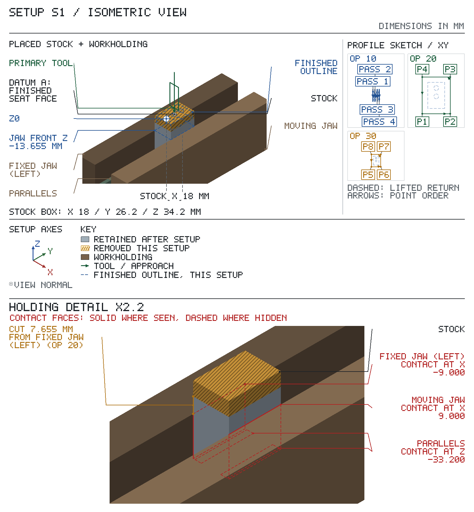
Spindle-to-table, tallest stack (op 10) with tool-change room: needs 201.904 of 431.800: fits.
X travel: needs 419.100 of 584.200: fits.
Y travel: needs 177.800 of 222.250: fits.
| op | tool | closest obstacle | clearance mm | action |
|---|---|---|---|---|
| 10 | T1 | fixed jaw beside the cut | 13.655 | |
| 20, 30 | T1 | fixed jaw beside the cut | 7.655 |
Rasters: feed each pass from → to, lift to the op's lift Z, rapid back to the next pass's start.
At each pass start, clear of the stock: lower to Z 0.000.
Lift to Z 6.000 after each pass; pass ends both in air, a cutter radius past the stock — every pass runs in and out clear.
| S1 op 10 — seat face · T1 3/8 in 4fl EM · Z 0.000 · conventional | ||||
|---|---|---|---|---|
| pass | X from | Y from | X to | Y to |
| 1 | -9.000 | 26.965 | -9.000 | -8.765 |
| 2 | -3.000 | 26.965 | -3.000 | -8.765 |
| 3 | 3.000 | 26.965 | 3.000 | -8.765 |
| 4 | 9.000 | 26.965 | 9.000 | -8.765 |
2 depth levels, top first, at the Zs in the heading: run the whole path below at each. Get down P1: plunge from the level above (level 1 from Z 0.000) at 45 mm/min. Between levels, stay at P1: the path ends where it starts.
Done: level 1 of 2 level 2 of 2
Cutter-centre checkpoints; stage: rough, leaves 0.300 mm for finish; rows in cutting order (conventional, clockwise spindle).
| S1 op 20 — foot profile · T1 3/8 in 4fl EM · Z -3.000, -6.000 · conventional | |||
|---|---|---|---|
| # | P | X | Y |
| 1 | P1 | -13.065 | -8.065 |
| 2 | P2 | 13.065 | -8.065 |
| 3 | P3 | 13.065 | 26.265 |
| 4 | P4 | -13.065 | 26.265 |
| 5 | P1 | -13.065 | -8.065 |
Enter at P5: plunge Z 0.000 → -6.000 at 45 mm/min.
Cutter-centre checkpoints; stage: finish; rows in cutting order (conventional, clockwise spindle).
| S1 op 30 — foot profile · T1 3/8 in 4fl EM · Z -6.000 · conventional | |||
|---|---|---|---|
| # | P | X | Y |
| 1 | P5 | -12.765 | -7.765 |
| 2 | P6 | 12.765 | -7.765 |
| 3 | P7 | 12.765 | 25.965 |
| 4 | P8 | -12.765 | 25.965 |
| 5 | P5 | -12.765 | -7.765 |
Turn the part over: the other face up, the +X end stays at +X. Starts from: part as it arrives from Setup S1 — top at Z 27.200, bottom at Z -6.000.
| grip length mm | jaw top above parallels mm | work top above jaw tops mm | jaw centre at Y | parallels at (X, Y) |
|---|---|---|---|---|
| 10.370 | 16.370 | 16.830 | -9.100 | (-6.250, -9.100); (6.250, -9.100) |
Coolant: cutting-oil.
| T | tool | insert / size / material | holder / station | ops |
|---|---|---|---|---|
| T1 | 9.525 mm EM | Ø9.525, flute 31.750, 4 flutes, HSS, projection 37.000 from holder face | R8 3/8 in collet | 10, 20, 30 |
Positive directions: X+ tool moves right relative to the work (table moves left); Y+ tool moves away from you relative to the work (table moves toward you); Z+ tool moves up. Axis Set each axis (never Preset), then make the check jog: the display must show 'must read'; 'if reversed' means STOP, fix the axis direction and redo the zero.
| axis | touch / pick up | Axis Set | check jog | must read | if reversed |
|---|---|---|---|---|---|
| X | raw left side at Y -12, Z +20, above the fixed jaw; 0.2 in edge finder; from -X side; surface at -9.000; edge-finder radius 2.540; speed, kick-out and offset: EDGE FINDER box, Setup P1 sheet 1 | -11.540 | +X 10.000 | -1.540 | -21.540 |
| Y | raw free end at X 0, Z +20; 0.2 in edge finder; from -Y side; surface at -22.200; edge-finder radius 2.540; speed, kick-out and offset: EDGE FINDER box, Setup P1 sheet 1 | -24.740 | +Y 10.000 | -14.740 | -34.740 |
| Z | top; T1 9.525 mm EM; surface at 27.200; paper 0.050 | 27.250 | +Z 10.000 | 37.250 | 17.250 |
X and Y check jog, after each Axis Set:
| SETUP S2 — sheet 1 (continued): operations | ||||||||
|---|---|---|---|---|---|---|---|---|
| op | do | feature | tool | rpm | feed | Z tip | direction | inspection: limit, gauge |
| 10 | rough pocket, leave 0.300 mm per side, 4.000 mm axial per pass | ear relief | T1 | 900 | 90 mm/min | Z 27.200 → 16.000 in 3 levels of 4.000 max | conventional | — |
| See contour table on S2 sheet 3 | ||||||||
| 20 | rough pocket, leave 0.300 mm per side, 4.000 mm axial per pass | ear sides | T1 | 900 | 90 mm/min | Z 27.200 → 16.000 in 3 levels of 4.000 max | conventional | — |
| See contour table on S2 sheet 3 | ||||||||
| 30 | rough pocket, leave 0.300 mm per side, 4.000 mm axial per pass | ear sides | T1 | 900 | 90 mm/min plunge 45 mm/min | Z 27.200 → 16.000 in 3 levels of 4.000 max | conventional | — |
| See contour table on S2 sheet 3 | ||||||||
Sign off: __________ First article / measured results: ____________________
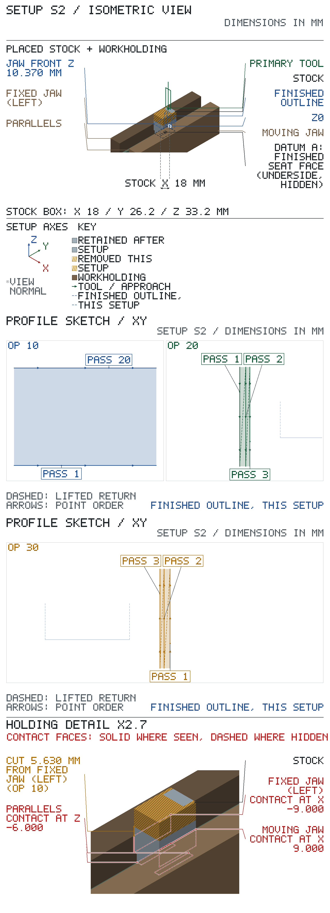
Spindle-to-table, tallest stack (op 10) with tool-change room: needs 203.079 of 431.800: fits.
X travel: needs 419.100 of 584.200: fits.
Y travel: needs 177.800 of 222.250: fits.
| op | tool | closest obstacle | clearance mm | action |
|---|---|---|---|---|
| 10, 20 | T1 | fixed jaw beside the cut | 5.630 | |
| 30 | T1 | moving jaw beside the cut | 5.630 |
Rasters: feed each pass from → to, lift to the op's lift Z, rapid back to the next pass's start.
3 depth levels, top first, at the Zs in the heading: run the whole path below at each. Get down at each pass start, clear of the stock: lower to the level's Z. Between levels, lift to Z 32.200 (above the stock), rapid back to pass 1.
Done: level 1 of 3 level 2 of 3 level 3 of 3
Lift to Z 32.200 after each pass; pass ends both in air, a cutter radius past the stock — every pass runs in and out clear; pass 1 enters from air, a cutter radius outside the stock on the open -Y side.
| S2 op 10 — ear relief · T1 9.525 mm EM · Z 23.200, 19.200, 16.000 · conventional | ||||
|---|---|---|---|---|
| pass | X from | Y from | X to | Y to |
| 1 | -13.765 | -26.965 | 13.765 | -26.965 |
| 2 | -13.765 | -25.965 | 13.765 | -25.965 |
| 3 | -13.765 | -24.965 | 13.765 | -24.965 |
| 4 | -13.765 | -23.965 | 13.765 | -23.965 |
| 5 | -13.765 | -22.965 | 13.765 | -22.965 |
| 6 | -13.765 | -21.965 | 13.765 | -21.965 |
| 7 | -13.765 | -20.965 | 13.765 | -20.965 |
| 8 | -13.765 | -19.965 | 13.765 | -19.965 |
| 9 | -13.765 | -18.965 | 13.765 | -18.965 |
| 10 | -13.765 | -17.965 | 13.765 | -17.965 |
| 11 | -13.765 | -16.965 | 13.765 | -16.965 |
| 12 | -13.765 | -15.965 | 13.765 | -15.965 |
| 13 | -13.765 | -14.965 | 13.765 | -14.965 |
| 14 | -13.765 | -13.965 | 13.765 | -13.965 |
| 15 | -13.765 | -12.965 | 13.765 | -12.965 |
| 16 | -13.765 | -11.965 | 13.765 | -11.965 |
| 17 | -13.765 | -10.965 | 13.765 | -10.965 |
| 18 | -13.765 | -9.965 | 13.765 | -9.965 |
| 19 | -13.765 | -8.965 | 13.765 | -8.965 |
| 20 | -13.765 | -8.065 | 13.765 | -8.065 |
3 depth levels, top first, at the Zs in the heading: run the whole path below at each. Get down at each pass start, clear of the stock: lower to the level's Z. Between levels, lift to Z 32.200 (above the stock), rapid back to pass 1.
Done: level 1 of 3 level 2 of 3 level 3 of 3
Lift to Z 32.200 after each pass; the +Y pass end is in air, a cutter radius past the stock; pass 1 enters from air, a cutter radius outside the stock on the open -X side.
| S2 op 20 — ear sides · T1 9.525 mm EM · Z 23.200, 19.200, 16.000 · conventional | ||||
|---|---|---|---|---|
| pass | X from | Y from | X to | Y to |
| 1 | -13.765 | 8.765 | -13.765 | -7.765 |
| 2 | -12.765 | 8.765 | -12.765 | -7.765 |
| 3 | -12.065 | 8.765 | -12.065 | -7.765 |
3 depth levels, top first, at the Zs in the heading: run the whole path below at each. Get down at the pass starting X 12.765, Y -7.765; at the pass starting X 12.065, Y -7.765: plunge from the level above (level 1 from Z 27.200) at 45 mm/min; at every other pass start, clear of the stock: lower to the level's Z. Between levels, lift to Z 32.200 (above the stock), rapid back to pass 1.
Done: level 1 of 3 level 2 of 3 level 3 of 3
Lift to Z 32.200 after each pass; the +Y pass end is in air, a cutter radius past the stock; pass 1 enters from air, a cutter radius outside the stock on the open +X side.
| S2 op 30 — ear sides · T1 9.525 mm EM · Z 23.200, 19.200, 16.000 · conventional | ||||
|---|---|---|---|---|
| pass | X from | Y from | X to | Y to |
| 1 | 13.765 | -7.765 | 13.765 | 8.765 |
| 2 | 12.765 | -7.765 | 12.765 | 8.765 |
| 3 | 12.065 | -7.765 | 12.065 | 8.765 |
Starts from: part as it arrives from Setup S2 — top at Z 27.200, bottom at Z -6.000.
| grip length mm | jaw top above parallels mm | work top above jaw tops mm | jaw centre at Y | parallels at (X, Y) |
|---|---|---|---|---|
| 3.670 | 3.670 | 29.530 | -9.100 | (-6.250, -9.100); (6.250, -9.100) |
Coolant: cutting-oil.
| T | tool | insert / size / material | holder / station | ops |
|---|---|---|---|---|
| T1 | 9.525 mm EM | Ø9.525, flute 31.750, 4 flutes, HSS, projection 37.000 from holder face | R8 3/8 in collet | 10, 20, 40, 45, 50, 55 |
| T2 | 6.35 mm spot drill | Ø6.350, flute 19.000, 2 flutes, M42, projection 50.000 from holder face | drill chuck | 60, 80 |
| T3 | #15 drill | Ø4.572, flute 54.000, 2 flutes, HSS, projection 62.000 from holder face | drill chuck | 70, 90 |
Positive directions: X+ tool moves right relative to the work (table moves left); Y+ tool moves away from you relative to the work (table moves toward you); Z+ tool moves up. Axis Set each axis (never Preset), then make the check jog: the display must show 'must read'; 'if reversed' means STOP, fix the axis direction and redo the zero.
Before zeroing: align the work on the foot profile with the dial test indicator: run the indicator along the length of each surface by table travel; while it reads more than 0.0254 mm total indicator reading, loosen the clamping, tap the high end of the work toward the low reading, re-clamp and sweep again.
| axis | touch / pick up | Axis Set | check jog | must read | if reversed |
|---|---|---|---|---|---|
| X | raw left side at Y -12, Z +8, below the Z +16 step; 0.2 in edge finder; from -X side; surface at -9.000; edge-finder radius 2.540; speed, kick-out and offset: EDGE FINDER box, Setup P1 sheet 1 | -11.540 | +X 10.000 | -1.540 | -21.540 |
| Y | raw free end at X 0, Z +8, below the Z +16 step; 0.2 in edge finder; from -Y side; surface at -22.200; edge-finder radius 2.540; speed, kick-out and offset: EDGE FINDER box, Setup P1 sheet 1 | -24.740 | +Y 10.000 | -14.740 | -34.740 |
| Z | top; T1 9.525 mm EM; surface at 27.200; paper 0.050 | 27.250 | +Z 10.000 | 37.250 | 17.250 |
X and Y check jog, after each Axis Set:
After op 55, install T2 6.35 mm spot drill for op 60, then touch the top (Z 27.200) with 0.050 paper → Axis Set Z 27.250.
Before op 70, install T3 #15 drill, then re-touch it: Z — on the top (Z 27.200): touch it, then set, paper 0.050; Axis Set Z 27.250.
Before op 80, install T2 6.35 mm spot drill, then re-touch it: Z — on the top (Z 27.200): touch it, then set, paper 0.050; Axis Set Z 27.250.
Before op 90, install T3 #15 drill, then re-touch it: Z — on the top (Z 27.200): touch it, then set, paper 0.050; Axis Set Z 27.250.
| SETUP S3 — sheet 1 (continued): operations | ||||||||
|---|---|---|---|---|---|---|---|---|
| op | do | feature | tool | rpm | feed | Z tip | direction | inspection: limit, gauge |
| 10 | rough pocket, leave 0.300 mm per side, 3.000 mm axial per pass | ear relief | T1 | 900 | 90 mm/min | Z 16.000 → 0.300 in 6 levels of 3.000 max | conventional | — |
| FIXED JAW 2.630 mm FROM THE CUT — hand feed past itTIP 2.630 ABOVE JAW TOP — check before plungingSee contour table on S3 sheet 3 | ||||||||
| 20 | finish pocket, 9.100 mm axial per pass | ear relief | T1 | 900 | 90 mm/min | Z 16.000 → 0.000 in 2 levels of 9.100 max | conventional | — |
| FIXED JAW 2.330 mm FROM THE CUT — hand feed past itTIP 2.330 ABOVE JAW TOP — check before plungingSee contour table on S3 sheet 3 | ||||||||
| 40 | rough pocket, leave 0.300 mm per side, 3.000 mm axial per pass | ear sides | T1 | 900 | 90 mm/min | Z 16.000 → 0.300 in 6 levels of 3.000 max | conventional | — |
| FIXED JAW 2.630 mm FROM THE CUT — hand feed past itTIP 2.630 ABOVE JAW TOP — check before plunging Left ear side only; clear the narrow X -9..-7 strip. Keep the crown square for S4. See contour table on S3 sheet 3 | ||||||||
| 45 | rough pocket, leave 0.300 mm per side, 3.000 mm axial per pass | ear sides | T1 | 900 | 90 mm/min plunge 45 mm/min | Z 16.000 → 0.300 in 6 levels of 3.000 max | conventional | — |
| MOVING JAW 2.630 mm FROM THE CUT — hand feed past itTIP 2.630 ABOVE JAW TOP — check before plunging Right ear side only; clear the narrow X +7..+9 strip. Keep the crown square for S4. See contour table on S3 sheet 3 | ||||||||
| 50 | finish pocket, 9.100 mm axial per pass | ear sides | T1 | 900 | 90 mm/min | Z 16.000 → 0.000 in 2 levels of 9.100 max | conventional | — |
| FIXED JAW 2.330 mm FROM THE CUT — hand feed past itTIP 2.330 ABOVE JAW TOP — check before plunging Left ear wall and left ledge to Z0. Keep the crown square for S4. See contour table on S3 sheet 3 | ||||||||
| 55 | finish pocket, 9.100 mm axial per pass | ear sides | T1 | 900 | 90 mm/min plunge 45 mm/min | Z 16.000 → 0.000 in 2 levels of 9.100 max | conventional | width 13.90–14.10: caliper |
| MOVING JAW 2.330 mm FROM THE CUT — hand feed past itTIP 2.330 ABOVE JAW TOP — check before plunging Right ear wall and right ledge to Z0. Keep the crown square for S4. Check the ear width after both walls are finished. See contour table on S3 sheet 3 | ||||||||
| 57 | inspect | foot top | — | — | — | — | — | height 5.90–6.10: caliper |
Measure seat to foot top on the free run and on both ledges. | ||||||||
| 60 | spot | hold down a | T2 | 1050 | 42 mm/min | tool axis X 0.000, Y -8.200 Z 0.000 → -0.600 depth 0.600 | — | — |
| 70 | drill | hold down a | T3 | 1700 | 187 mm/min | tool axis X 0.000, Y -8.200 Z 0.000 → -9.370 breaks through at -6.000 | — | Ø 4.572–4.672: pin gauge station 8.10–8.30: caliper |
| PARALLEL 1 2.377 mm FROM THE CUT — hand feed past it Station check: the drawing stations run from the ear mid-plane, 3.000 outside the ear inner face op 20 finished. Put the largest pin gauge that enters (Ø p) upright in the hole; with the caliper inside jaws read the gap G from the ear inner face to the pin. Station = 3.000 + G + p/2. With the 4.572 pin, accept G 2.814-3.014 (station 8.10-8.30). Break through: the full diameter runs at least 1.996 past the exit face. | ||||||||
| 80 | spot | hold down b | T2 | 1050 | 42 mm/min | tool axis X 0.000, Y -16.000 Z 0.000 → -0.600 depth 0.600 | — | — |
| 90 | drill | hold down b | T3 | 1700 | 187 mm/min | tool axis X 0.000, Y -16.000 Z 0.000 → -9.370 breaks through at -6.000 | — | Ø 4.572–4.672: pin gauge station 15.90–16.10: caliper |
| PARALLEL 1 2.377 mm FROM THE CUT — hand feed past it Station check, as op 70 from the ear inner face: largest entering pin (Ø p) in the hole, caliper inside jaws read the gap G from the ear inner face to the pin; station = 3.000 + G + p/2. With the 4.572 pin, accept G 10.614-10.814 (station 15.90-16.10). Break through: the full diameter runs at least 1.996 past the exit face. | ||||||||
Sign off: __________ First article / measured results: ____________________
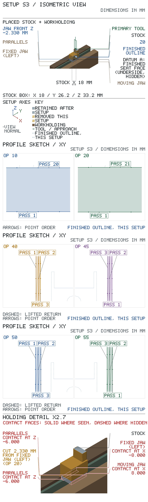
Spindle-to-table, tallest stack (op 70) with tool-change room: needs 329.779 of 431.800: fits.
X travel: needs 419.100 of 584.200: fits.
Y travel: needs 177.800 of 222.250: fits.
| op | tool | closest obstacle | clearance mm | action |
|---|---|---|---|---|
| 10, 40 | T1 | fixed jaw beside the cut | 2.630 | hand feed; check the tip clears the jaws before plunging; hand feed past the fixed jaw; check the cutter clears it |
| 20, 50 | T1 | fixed jaw beside the cut | 2.330 | hand feed; check the tip clears the jaws before plunging; hand feed past the fixed jaw; check the cutter clears it |
| 45 | T1 | moving jaw beside the cut | 2.630 | hand feed; check the tip clears the jaws before plunging; hand feed past the moving jaw; check the cutter clears it |
| 55 | T1 | moving jaw beside the cut | 2.330 | hand feed; check the tip clears the jaws before plunging; hand feed past the moving jaw; check the cutter clears it |
| 60 | T2 | tool body to stock 5.199 from the tool axis | 2.024 | |
| 70, 90 | T3 | parallel 1 beside the cut | 2.377 | hand feed past the parallel 1; check the cutter clears it |
| 80 | T2 | fixed jaw beside the cut | 5.998 |
| feature | reference point | X | Y | Z |
|---|---|---|---|---|
| hold down a | hole axis at the entry face | 0.000 | -8.200 | 0.000 |
| hold down b | hole axis at the entry face | 0.000 | -16.000 | 0.000 |
The op table gives the tool targets.
Rasters: feed each pass from → to, lift to the op's lift Z, rapid back to the next pass's start.
6 depth levels, top first, at the Zs in the heading: run the whole path below at each. Get down at each pass start, clear of the stock: lower to the level's Z. Between levels, lift to Z 32.200 (above the stock), rapid back to pass 1.
Done: level 1 of 6 level 2 of 6 level 3 of 6 level 4 of 6 level 5 of 6 level 6 of 6
Lift to Z 32.200 after each pass; pass ends both in air, a cutter radius past the stock — every pass runs in and out clear; pass 1 enters from air, a cutter radius outside the stock on the open -Y side.
| S3 op 10 — ear relief · T1 9.525 mm EM · Z 13.000, 10.000, 7.000, 4.000, 1.000, 0.300 · conventional | ||||
|---|---|---|---|---|
| pass | X from | Y from | X to | Y to |
| 1 | -13.765 | -26.965 | 13.765 | -26.965 |
| 2 | -13.765 | -25.965 | 13.765 | -25.965 |
| 3 | -13.765 | -24.965 | 13.765 | -24.965 |
| 4 | -13.765 | -23.965 | 13.765 | -23.965 |
| 5 | -13.765 | -22.965 | 13.765 | -22.965 |
| 6 | -13.765 | -21.965 | 13.765 | -21.965 |
| 7 | -13.765 | -20.965 | 13.765 | -20.965 |
| 8 | -13.765 | -19.965 | 13.765 | -19.965 |
| 9 | -13.765 | -18.965 | 13.765 | -18.965 |
| 10 | -13.765 | -17.965 | 13.765 | -17.965 |
| 11 | -13.765 | -16.965 | 13.765 | -16.965 |
| 12 | -13.765 | -15.965 | 13.765 | -15.965 |
| 13 | -13.765 | -14.965 | 13.765 | -14.965 |
| 14 | -13.765 | -13.965 | 13.765 | -13.965 |
| 15 | -13.765 | -12.965 | 13.765 | -12.965 |
| 16 | -13.765 | -11.965 | 13.765 | -11.965 |
| 17 | -13.765 | -10.965 | 13.765 | -10.965 |
| 18 | -13.765 | -9.965 | 13.765 | -9.965 |
| 19 | -13.765 | -8.965 | 13.765 | -8.965 |
| 20 | -13.765 | -8.065 | 13.765 | -8.065 |
2 depth levels, top first, at the Zs in the heading: run the whole path below at each. Get down at each pass start, clear of the stock: lower to the level's Z. Between levels, lift to Z 32.200 (above the stock), rapid back to pass 1.
Done: level 1 of 2 level 2 of 2
Lift to Z 32.200 after each pass; pass ends both in air, a cutter radius past the stock — every pass runs in and out clear; pass 1 enters from air, a cutter radius outside the stock on the open -Y side.
| S3 op 20 — ear relief · T1 9.525 mm EM · Z 6.900, 0.000 · conventional | ||||
|---|---|---|---|---|
| pass | X from | Y from | X to | Y to |
| 1 | -13.765 | -26.965 | 13.765 | -26.965 |
| 2 | -13.765 | -25.965 | 13.765 | -25.965 |
| 3 | -13.765 | -24.965 | 13.765 | -24.965 |
| 4 | -13.765 | -23.965 | 13.765 | -23.965 |
| 5 | -13.765 | -22.965 | 13.765 | -22.965 |
| 6 | -13.765 | -21.965 | 13.765 | -21.965 |
| 7 | -13.765 | -20.965 | 13.765 | -20.965 |
| 8 | -13.765 | -19.965 | 13.765 | -19.965 |
| 9 | -13.765 | -18.965 | 13.765 | -18.965 |
| 10 | -13.765 | -17.965 | 13.765 | -17.965 |
| 11 | -13.765 | -16.965 | 13.765 | -16.965 |
| 12 | -13.765 | -15.965 | 13.765 | -15.965 |
| 13 | -13.765 | -14.965 | 13.765 | -14.965 |
| 14 | -13.765 | -13.965 | 13.765 | -13.965 |
| 15 | -13.765 | -12.965 | 13.765 | -12.965 |
| 16 | -13.765 | -11.965 | 13.765 | -11.965 |
| 17 | -13.765 | -10.965 | 13.765 | -10.965 |
| 18 | -13.765 | -9.965 | 13.765 | -9.965 |
| 19 | -13.765 | -8.965 | 13.765 | -8.965 |
| 20 | -13.765 | -7.965 | 13.765 | -7.965 |
| 21 | -13.765 | -7.765 | 13.765 | -7.765 |
6 depth levels, top first, at the Zs in the heading: run the whole path below at each. Get down at each pass start, clear of the stock: lower to the level's Z. Between levels, lift to Z 32.200 (above the stock), rapid back to pass 1.
Done: level 1 of 6 level 2 of 6 level 3 of 6 level 4 of 6 level 5 of 6 level 6 of 6
Lift to Z 32.200 after each pass; the +Y pass end is in air, a cutter radius past the stock; pass 1 enters from air, a cutter radius outside the stock on the open -X side.
| S3 op 40 — ear sides · T1 9.525 mm EM · Z 13.000, 10.000, 7.000, 4.000, 1.000, 0.300 · conventional | ||||
|---|---|---|---|---|
| pass | X from | Y from | X to | Y to |
| 1 | -13.765 | 8.765 | -13.765 | -7.765 |
| 2 | -12.765 | 8.765 | -12.765 | -7.765 |
| 3 | -12.065 | 8.765 | -12.065 | -7.765 |
6 depth levels, top first, at the Zs in the heading: run the whole path below at each. Get down at the pass starting X 12.765, Y -7.765; at the pass starting X 12.065, Y -7.765: plunge from the level above (level 1 from Z 16.000) at 45 mm/min; at every other pass start, clear of the stock: lower to the level's Z. Between levels, lift to Z 32.200 (above the stock), rapid back to pass 1.
Done: level 1 of 6 level 2 of 6 level 3 of 6 level 4 of 6 level 5 of 6 level 6 of 6
Lift to Z 32.200 after each pass; the +Y pass end is in air, a cutter radius past the stock; pass 1 enters from air, a cutter radius outside the stock on the open +X side.
| S3 op 45 — ear sides · T1 9.525 mm EM · Z 13.000, 10.000, 7.000, 4.000, 1.000, 0.300 · conventional | ||||
|---|---|---|---|---|
| pass | X from | Y from | X to | Y to |
| 1 | 13.765 | -7.765 | 13.765 | 8.765 |
| 2 | 12.765 | -7.765 | 12.765 | 8.765 |
| 3 | 12.065 | -7.765 | 12.065 | 8.765 |
2 depth levels, top first, at the Zs in the heading: run the whole path below at each. Get down at each pass start, clear of the stock: lower to the level's Z. Between levels, lift to Z 32.200 (above the stock), rapid back to pass 1.
Done: level 1 of 2 level 2 of 2
Lift to Z 32.200 after each pass; the +Y pass end is in air, a cutter radius past the stock; pass 1 enters from air, a cutter radius outside the stock on the open -X side.
| S3 op 50 — ear sides · T1 9.525 mm EM · Z 6.900, 0.000 · conventional | ||||
|---|---|---|---|---|
| pass | X from | Y from | X to | Y to |
| 1 | -13.765 | 8.765 | -13.765 | -7.765 |
| 2 | -12.765 | 8.765 | -12.765 | -7.765 |
| 3 | -11.765 | 8.765 | -11.765 | -7.765 |
2 depth levels, top first, at the Zs in the heading: run the whole path below at each. Get down at the pass starting X 12.765, Y -7.765; at the pass starting X 11.765, Y -7.765: plunge from the level above (level 1 from Z 16.000) at 45 mm/min; at every other pass start, clear of the stock: lower to the level's Z. Between levels, lift to Z 32.200 (above the stock), rapid back to pass 1.
Done: level 1 of 2 level 2 of 2
Lift to Z 32.200 after each pass; the +Y pass end is in air, a cutter radius past the stock; pass 1 enters from air, a cutter radius outside the stock on the open +X side.
| S3 op 55 — ear sides · T1 9.525 mm EM · Z 6.900, 0.000 · conventional | ||||
|---|---|---|---|---|
| pass | X from | Y from | X to | Y to |
| 1 | 13.765 | -7.765 | 13.765 | 8.765 |
| 2 | 12.765 | -7.765 | 12.765 | 8.765 |
| 3 | 11.765 | -7.765 | 11.765 | 8.765 |
Starts from: part as it arrives from Setup S3 — top (outer face) at Z 1.000, bottom at Z -24.200.
Coolant: cutting-oil.
| T | tool | insert / size / material | holder / station | ops |
|---|---|---|---|---|
| T1 | 3/8 in 4fl EM | Ø9.525, flute 22.200, HSS, TiN, projection 38.000 from holder face | R8 3/8 in collet | 10, 15 |
| T2 | 9.525 mm spot drill | Ø9.525, flute 15.000, 2 flutes, M42, projection 31.000 from holder face | drill chuck | 30 |
| T3 | D drill | Ø6.248, flute 68.300, 2 flutes, HSS, projection 81.000 from holder face | drill chuck | 40 |
| T4 | 6.5 mm reamers | Ø6.512, shank Ø6.300, flute 26.000, 6 flutes, HSS, projection 72.000 from holder face | drill chuck | 50 |
Positive directions: X+ tool moves right relative to the work (table moves left); Y+ tool moves away from you relative to the work (table moves toward you); Z+ tool moves up. Axis Set each axis (never Preset), then make the check jog: the display must show 'must read'; 'if reversed' means STOP, fix the axis direction and redo the zero.
Before zeroing: align the work on the foot profile, foot top, seat face with the dial test indicator: run the indicator along the length of each surface by table travel; while it reads more than 0.0254 mm total indicator reading, loosen the clamping, tap the high end of the work toward the low reading, re-clamp and sweep again.
| axis | touch / pick up | Axis Set | check jog | must read | if reversed |
|---|---|---|---|---|---|
| X | foot left face at Y -3, Z -4, above the bridge; 0.2 in edge finder; from -X side; surface at -8.000; edge-finder radius 2.540; speed, kick-out and offset: EDGE FINDER box, Setup P1 sheet 1 | -10.540 | +X 10.000 | -0.540 | -20.540 |
| Y | plate front beside the part at X +45, Z -8, clear of the bridge hardware; 0.2 in edge finder; from -Y side; surface at 0.000; edge-finder radius 2.540; speed, kick-out and offset: EDGE FINDER box, Setup P1 sheet 1 | -2.540 | +Y 10.000 | 7.460 | -12.540 |
| Z | finished foot outer end, cutter centre at X 0, Y +1.5 (cutter edge 2.74 mm clear of the raw ear at Y -6; it overhangs the plate side, 4 mm above the plate top) (S1 op 30); T1 3/8 in 4fl EM; surface at 0.000; paper 0.050 | 0.050 | +Z 10.000 | 10.050 | -9.950 |
X and Y check jog, after each Axis Set:
After op 10, T1 3/8 in 4fl EM stays in for op 15: re-touch outer face (Z 0.000) with 0.050 paper → Axis Set Z 0.050.
After op 15, install T2 9.525 mm spot drill for op 30, then touch outer face (Z 0.000) with 0.050 paper → Axis Set Z 0.050.
Before op 40, install T3 D drill, then re-touch it: Z — on the top (Z 0.000): touch it, then set, paper 0.050; Axis Set Z 0.050.
Before op 50, install T4 6.5 mm reamers, then re-touch it: Z — on the top (Z 0.000): touch it, then set, paper 0.050; Axis Set Z 0.050.
| SETUP S4 — sheet 1 (continued): operations | ||||||||
|---|---|---|---|---|---|---|---|---|
| op | do | feature | tool | rpm | feed | Z tip | direction | inspection: limit, gauge |
| 10 | face, 1.000 mm axial per pass | outer face | T1 | 900 | 90 mm/min | Z 1.000 → 0.000 in 1 level of 1.000 max | conventional | — |
Face the complete top of the S4 entry stock, X -8..8 and Y -33.2..0, from Z +1 to Z0 before profiling the arch. Include the retained rectangular crown, not merely the finished outer-face outline. S1 op 30 already finished the foot's outer end at Z0, so this pass takes the 1 mm off the ear only and just wipes the foot end; the foot stays 24.2 long (24.10-24.30). See contour table on S4 sheet 3 | ||||||||
| 11 | inspect | ear relief | — | — | — | — | — | thickness 5.90–6.10: caliper |
Check 6 mm ear thickness only after both faces are finished; it was still 7 mm before op 10. | ||||||||
| 15 | rough profile, leave 0.300 mm per side, 3.200 mm axial per pass | ear arch | T1 | 900 | 90 mm/min plunge 45 mm/min | Z 0.000 → -6.300 in 2 levels of 3.200 max | conventional | — |
| See contour table on S4 sheet 3 | ||||||||
| 30 | spot | cross bore | T2 | 700 | 28 mm/min | tool axis X 0.000, Y -25.200 Z 0.000 → -0.600 depth 0.600 | — | — |
| 40 | drill | cross bore | T3 | 1250 | 138 mm/min | tool axis X 0.000, Y -25.200 Z 0.000 → -9.875 breaks through at -6.000 | — | — |
Break through: the full diameter runs at least 1.997 past the exit face. | ||||||||
| 50 | ream | cross bore | T4 | 650 | 164 mm/min | tool axis X 0.000, Y -25.200 Z 0.000 → -9.000 breaks through at -6.000 | — | Ø 6.50–6.53: pin gauge height 25.10–25.30: height gauge [S4 sheet 2 note 1] |
Break through: the full diameter runs at least 2.000 past the exit face. | ||||||||
Sign off: __________ First article / measured results: ____________________
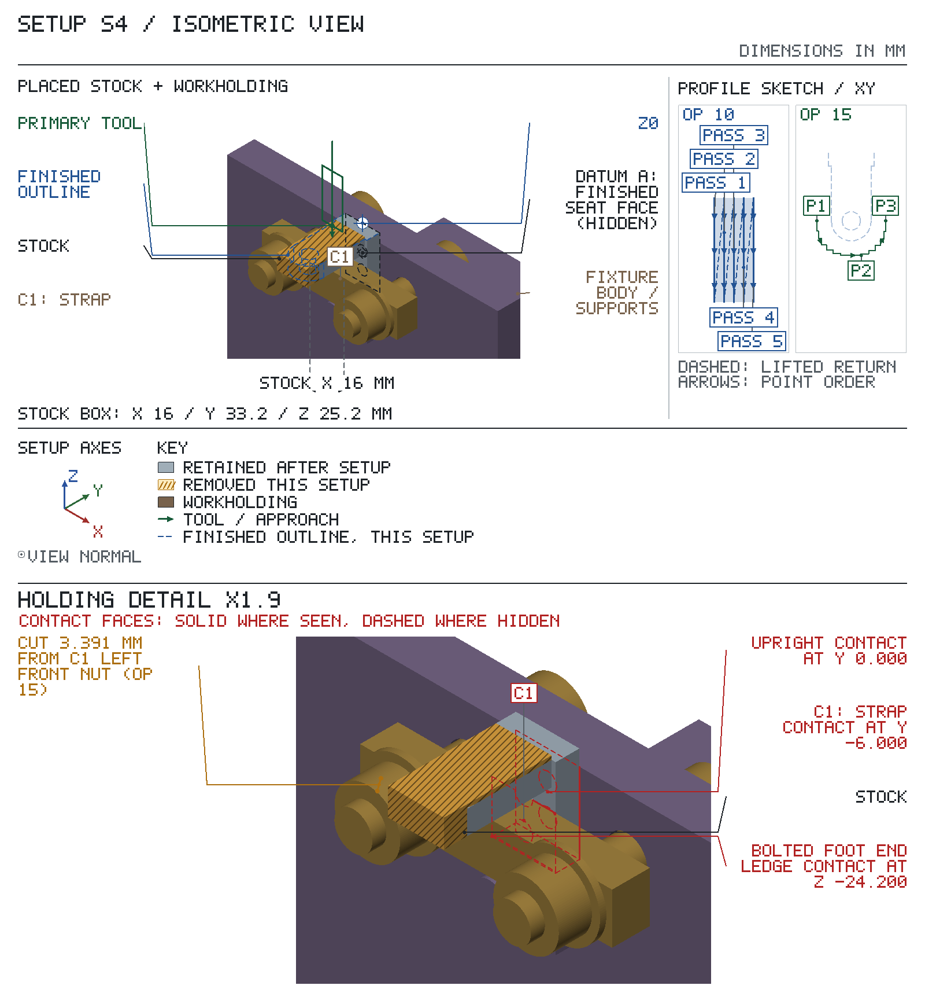
Make before Setup S4. Positions are in the Setup S4 frame: boxes give their X / Y / Z extents, cylinders their axis.
| Component | Size mm | Position, Setup S4 X / Y / Z mm | Locates | Fastener |
|---|---|---|---|---|
| upright (existing part: make the holes only) † | — | X -63.5…63.5, Y 0…12.7, Z -80.2…-4 with 2 × #10-32 tapped hole through, #21 (0.159 in) tap drill: axis at X -4, Z -33.2; Y -0.1…12.8; axis at X 4, Z -33.2; Y -0.1…12.8 with 2 × letter X (0.397 in) drilled clearance hole for a 3/8-16 stud: axis at X -20, Z -17.5; Y -0.1…12.8; axis at X 20, Z -17.5; Y -0.1…12.8 | finished seat face (datum A) | — |
| bolted foot end ledge † | 16 × 6 × 17.9 | X -8…8, Y -6…0, Z -42.1…-24.2 with 2 × #7 (0.201 in) drilled clearance hole for a #10-32 screw: axis at X -4, Z -33.2; Y -6.1…0.1; axis at X 4, Z -33.2; Y -6.1…0.1 | foot free end | two #10-32 x 5/8 in SHCS into the tapped upright |
Bought hardware (not made): 2 × #10-32 x 5/8 in SHCS.
Make: upright (existing part: make the holes only): cast iron as bought: make the four holes only. 1. Lay the plate on the upright's front face across two 1 in parallels, one under each outer end 45-63 mm from the centreline, so every hole is over the open gap; clamp it to the PM-30MV table with two strap clamps from the clamping kit on the upright's back face over the parallels. 2. Edge-find one outer end and the upright's top edge; the centreline is 63.5 mm from that end. 3. Hole centres from the centreline and the top edge, each within ±0.05 on the DRO: two #10-32 tapped holes at ±4.0, 29.2 below the top edge (8.0 apart, matching the ledge's #7 holes); two letter X stud holes at ±20.0, 13.5 below it (40.0 apart, matching the bridge). 4. At each hole spot 1.0 mm deep (a Ø3.5 cone) with the 3/8 in 120° spot drill at 700 rpm and 0.04 mm/rev, then drill #21 (0.159 in) through at 1800 rpm and 0.08 mm/rev, or letter X (0.397 in) through at 750 rpm and 0.13 mm/rev, dry, by hand on the quill. 5. Tap each #21 hole #10-32 before moving the table: the #10-32 plug tap in the drill chuck, spindle off, turned two turns by hand under light quill pressure to start it square; then release the chuck and tap through with the tap wrench, dry, backing off every turn. 6. Stone the front face flat over every exit burr: it seats datum A; bolted foot end ledge: 1018 cold-rolled 3/4 x 1/4 in flat bar, no heat treatment. 1. Bandsaw 21 mm off the bar. 2. Mill all six faces square in the vise with the 3/8 in 4-flute end mill at 900 rpm and 90 mm/min, at most 1 mm per pass, to 16.0 wide x 17.9 high x 6.0 thick (±0.05); top and bottom parallel within 0.02 and square to the back face that seats on the upright. 3. Clamp it flat, 6 mm up, the vise jaws on its top and bottom faces, on two 1/8 in thick parallels against the jaws. Edge-find one end and the top face: the hole centres are 4.0 and 12.0 mm from that end (8.0 apart ±0.05, matching the upright's tapped holes) and 9.0 below the top face. Spot each 1.0 mm deep with the 3/8 in 120° spot drill at 700 rpm and 0.04 mm/rev, then drill #7 (0.201 in) through at 1500 rpm and 0.08 mm/rev, with cutting oil. Break the edges. 4. Fit it: angle plate base down on the mill table; stand a 1-2-3 block on its 1 x 3 in face (2 in high) in front of the upright under the tapped holes; rest the ledge on it, back face flat on the upright, and tighten both #10-32 SHCS. Its top is then 68.7 mm above the table and 20.2 below the upright's top edge. 5. Check: sweep the ledge top along X with the DTI from the spindle; it must read 0.02 or less over the 16 mm. Lift the block out.
Make before Setup S4. Positions are in the Setup S4 frame: boxes give their X / Y / Z extents, cylinders their axis.
| Component | Size mm | Position, Setup S4 X / Y / Z mm | Locates |
|---|---|---|---|
| beam † | 63.5 × 12.7 × 9.53 | X -31.75…31.75, Y -15.53…-6, Z -23.85…-11.15 with 2 × letter X (0.397 in) drilled clearance hole for a 3/8-16 stud: axis at X -20, Z -17.5; Y -15.63…-5.9; axis at X 20, Z -17.5; Y -15.63…-5.9 | presses the finished foot top toward the plate |
Bought hardware (not made): 2 × 3/8-16 x 2-1/8 in stud through the upright; 4 × 3/8 in flat washer; 4 × 3/8-16 hex nut.
Make: beam: 1018 cold-rolled 1/2 x 3/8 in flat bar, no heat treatment. 1. Bandsaw 2-1/2 in (63.5 mm) off the bar; file both ends square and break the edges. 2. On the PM-30MV, clamp it flat in the vise, 1/2 in face up, the jaws on its two ends and the bar on two 1/8 in thick parallels against the jaws, so both holes are over the open gap. 3. Edge-find one end and one long side: the hole centres are 11.75 and 51.75 mm from that end (40.0 apart ±0.1, to match the upright's stud holes) and 6.35 mm in from the side. 4. Spot each hole 1.0 mm deep (a Ø3.5 cone) with the 3/8 in 120° spot drill at 700 rpm and 0.04 mm/rev, then drill letter X (0.397 in) through the 3/8 in thickness at 750 rpm and 0.13 mm/rev, with cutting oil, by hand on the quill. 5. Break every edge.
Spindle-to-table, tallest stack (op 40) with tool-change room: needs 294.900 of 431.800: fits.
X travel: needs 127.000 of 584.200: fits.
Y travel: needs 101.600 of 222.250: fits.
| op | tool | closest obstacle | clearance mm | action |
|---|---|---|---|---|
| 10 | T1 | upright beside the cut | 4.000 | |
| 15 | T1 | C1 left front nut beside the cut | 3.391 | |
| 30 | T2 | C1 beam beside the cut | 14.103 | |
| 40 | T3 | C1 beam beside the cut | 7.269 | |
| 50 | T4 | C1 beam beside the cut | 7.150 |
| feature | reference point | X | Y | Z |
|---|---|---|---|---|
| ear arch | arc centre on the Z0 surface | 0.000 | -25.200 | 0.000 |
| cross bore | hole axis at the entry face | 0.000 | -25.200 | 0.000 |
The op table gives the tool targets.
Rasters: feed each pass from → to, lift to the op's lift Z, rapid back to the next pass's start.
At each pass start, clear of the stock: lower to Z 0.000.
Lift to Z 6.000 after each pass; pass ends both in air, a cutter radius past the stock — every pass runs in and out clear.
| S4 op 10 — outer face · T1 3/8 in 4fl EM · Z 0.000 · conventional | ||||
|---|---|---|---|---|
| pass | X from | Y from | X to | Y to |
| 1 | -8.000 | 4.765 | -8.000 | -37.965 |
| 2 | -4.000 | 4.765 | -4.000 | -37.965 |
| 3 | 0.000 | 4.765 | 0.000 | -37.965 |
| 4 | 4.000 | 4.765 | 4.000 | -37.965 |
| 5 | 8.000 | 4.765 | 8.000 | -37.965 |
2 depth levels, top first, at the Zs in the heading: run the whole path below at each. Get down P1: plunge from the level above (level 1 from Z 0.000) at 45 mm/min. Between levels, raise to Z 5.000 (above the stock), move back to P1.
Done: level 1 of 2 level 2 of 2
Cutter-centre arc R12.063 about X 0.000, Y -25.200; rough stairs kept outside the finished outline, one handwheel axis per row, leaving at most 0.443 mm for the file (cap 0.5 mm); stage: rough, leaves 0.300 mm for finish; rows in cutting order (conventional, clockwise spindle).
| S4 op 15 — ear arch · T1 3/8 in 4fl EM · Z -3.200, -6.300 · conventional | ||||
|---|---|---|---|---|
| # | P | X | Y | handwheel axis |
| 1 | P1 | -12.065 | -25.200 | |
| 2 | corner | -12.065 | -28.665 | Y |
| 3 | -11.555 | -28.665 | X | |
| 4 | corner | -11.555 | -31.335 | Y |
| 5 | -10.390 | -31.335 | X | |
| 6 | corner | -10.390 | -33.650 | Y |
| 7 | -8.610 | -33.650 | X | |
| 8 | corner | -8.610 | -35.470 | Y |
| 9 | -6.330 | -35.470 | X | |
| 10 | corner | -6.330 | -36.690 | Y |
| 11 | -3.685 | -36.690 | X | |
| 12 | corner | -3.685 | -37.265 | Y |
| 13 | P2 (corner) | 3.465 | -37.265 | X |
| 14 | 3.465 | -36.755 | Y | |
| 15 | corner | 6.135 | -36.755 | X |
| 16 | 6.135 | -35.590 | Y | |
| 17 | corner | 8.450 | -35.590 | X |
| 18 | 8.450 | -33.810 | Y | |
| 19 | corner | 10.270 | -33.810 | X |
| 20 | 10.270 | -31.530 | Y | |
| 21 | corner | 11.490 | -31.530 | X |
| 22 | 11.490 | -28.885 | Y | |
| 23 | corner | 12.065 | -28.885 | X |
| 24 | P3 | 12.065 | -25.200 | Y |
file the arch to filing buttons because the reamed cross bore is their pin, so the R7 comes out concentric with the bore without a second mill setup.
Starts from: part as it arrives from Setup S4 — top (outer face) at Z 0.000, bottom at Z -24.200.
Bought finished: two bearing-steel collars hardened 58-62 HRC, OD 14 g6 ground (13.983-13.994), bore 6.5 H7 (6.500-6.515), OD runout to bore 0.01 TIR, 4.00 ±0.02 thick (the buttons); one stepped stud hardened and ground 6.5 g6 (6.486-6.495) on body and tail: Ø12 x 5 head, body 13.5 +0/-0.2 from the head to the thread shoulder (shorter than the 13.86 minimum button/ear/button stack, so the nut clamps the stack before the shoulder), DIN 76 thread undercut, M6x1 x 10 soft thread, tail 45 below the head (20 shows above the bench-vise jaws, 25 gripped); one ISO 4032 M6 nut.
Check on receipt, before first use; return the item if any check fails.
| check | gauge | accept |
|---|---|---|
| each button OD | 0-1 in mic | 13.983–13.994 mm (0.5506–0.5509 in) |
| each button bore | pin gauge | 6.500–6.515 mm; 6.500 GO pin enters, 6.515 NO-GO does not |
| stud tail and ground body | 0-1 in mic | 6.486–6.495 mm (0.2554–0.2557 in) |
| stud body length, head upper face to thread shoulder | caliper | 13.300–13.500 mm (0.5237–0.5314 in) |
| stud tail length, head underside to tail end | caliper | 44.500–45.500 mm (1.7520–1.7913 in) |
| each button OD runout | DTI; button on the 6.500 GO pin in a V-block, one full turn | ≤ 0.010 mm; TIR |
| each button rim hard | by hand / eye; smooth file, light stroke on the rim | the file skates without biting |
| stud thread | by hand / eye | the M6 nut runs the full thread by hand, down to the shoulder |
| SETUP S4F — sheet 1 (continued): assembly / finishing | ||||
|---|---|---|---|---|
| step | feature | material / consumable | action | inspection: limit, gauge |
| 10 | ear arch | — | File the crown stairs left by S4 op 15 down to the hardened button rims across the full 6 mm ear, working from one arch end over the crown to the other; stop when the file rides on both buttons without cutting. | R 6.90–7.10: radius gauge |
| Bench filing: file down to the hardened button rims; guide: bracket arch filing buttons (buttons Ø13.983–13.994 mm, bored Ø6.5–6.515 mm, OD runout 0.01 mm TIR, on a Ø6.486–6.495 mm pin, through cross bore Ø6.5–6.53 mm; worst case they file R6.950 to R7.039 mm); check with radius gauge; file off the stock left by S4 op 15 (at most 0.5 mm). | ||||
Sign off: __________ First article / measured results: ____________________
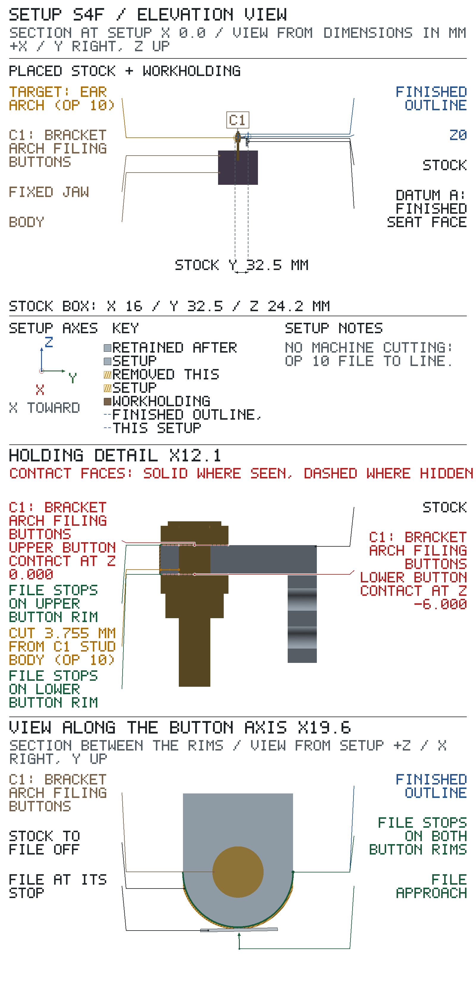
Off the mill, break the edges, clean the part and send it out for black oxide with nothing masked; re-gauge the bore when it comes back.
Starts from: part as it arrives from Setup S4F — top at Z 26.200, bottom at Z -6.000.
| SETUP S5 — sheet 1 (continued): assembly / finishing | ||||
|---|---|---|---|---|
| step | feature | material / consumable | action | inspection: limit, gauge |
| 10 | foot profile | — | Break every machined edge R0.25 or 0.25 chamfer max with a file and stone, including both cross-bore mouths and the hold-down hole entries; do not touch the reamed bore wall. Wipe off chips and oil with solvent. | — |
| 20 | foot profile | outside: black-oxide finisher (hot black oxide, matte) | Send the part out for black oxide as the drawing calls for. Leave every face open to the bath; the finish adds about 1 µm or less, well inside the 0.03 mm bore band. Ask the vendor for the oil dip after blackening. | — |
| 30 | cross bore | — | On return from black oxide: wipe excess oil from the bore and re-gauge it before release. | Ø 6.50–6.53: pin gauge [S5 sheet 2 note 1] |
Sign off: __________ First article / measured results: ____________________
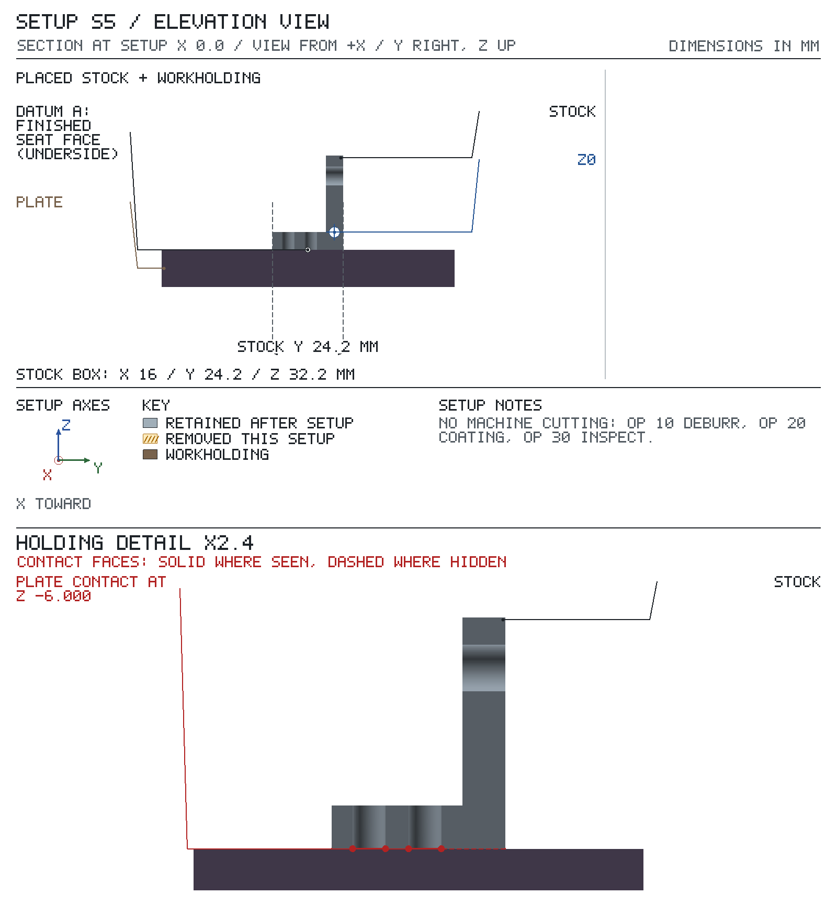